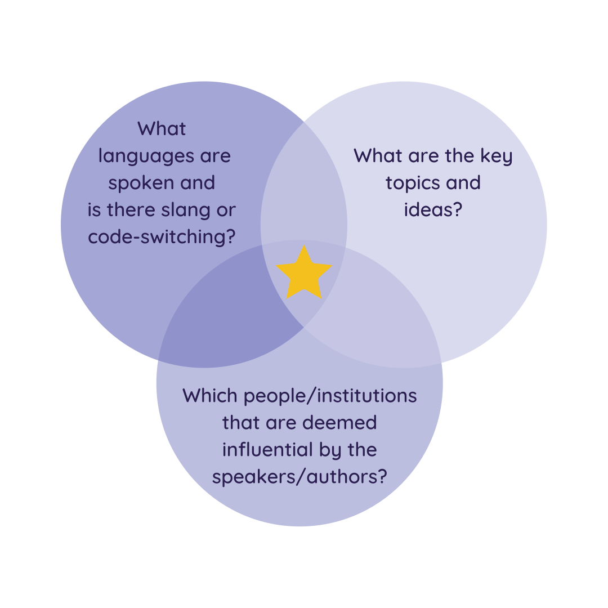
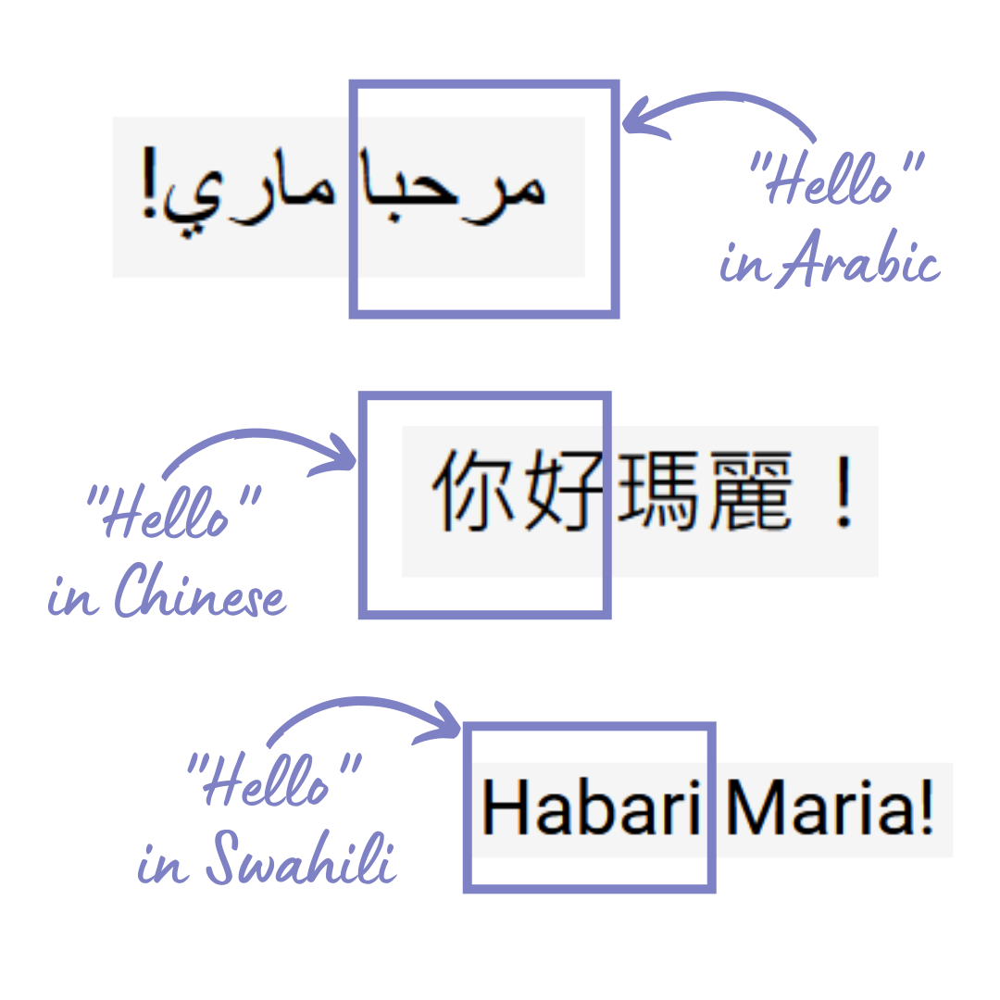
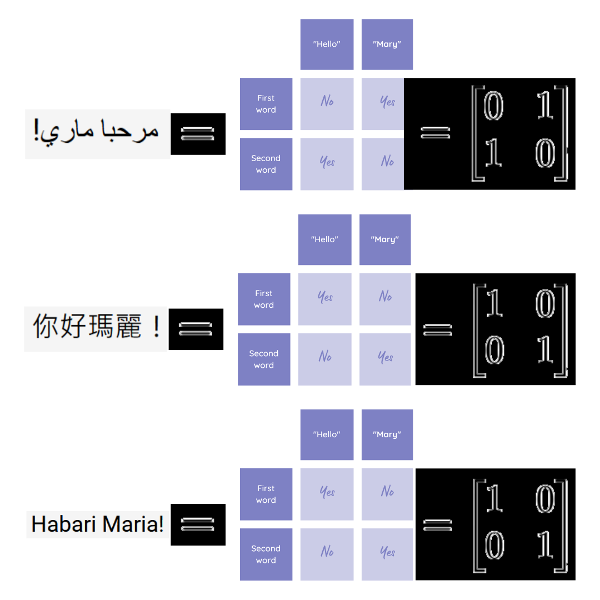
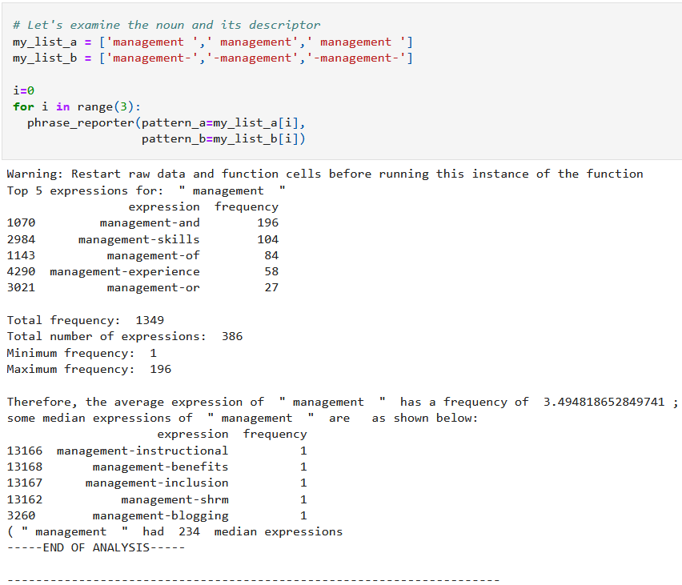
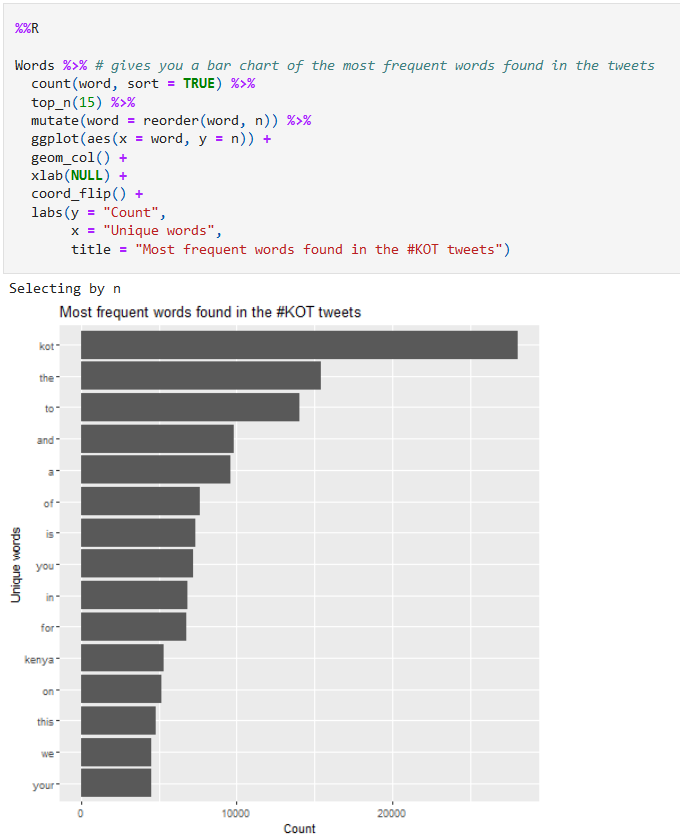

ML/Data Science article 4
Contents
ML/Data Science article 4#
Delivering Success in Natural Language Processing Projects: Part Two#
Publisher: 2 articles on Medium - here and here
Publishing Dates: Aug 24, 2022 and Aug 25, 2022

Discovery begins!
This is the second post of a five-part series where I aim to demystify Natural Language Processing (NLP) through a key learning tool that I would call the NLP toolbox. You can access the first article here.
A quick recap:
The NLP toolbox is a framework designed to strike the delicate balance between taking the time to deeply study a phenomenon and rapidly skimming through relevant work
There are 4 stages in the research process where we can apply the NLP toolbox: Problem Definition, Data Exploration, Feature Engineering, and Model Fitting and Evaluation
Consider Pain, Accessibility, Specificity, Interest and Location and Population when crafting an NLP problem
Consider the real-world and NLP data technical domains to identify if the problem you are interested in is worth researching
Craft an abstract (mine was about 120 words) that captures the real-world and technical aspects of the problem and the proposed solution to give the big picture
Remember to avoid using a hammer as a tool for everything!
Not all problems can be or should be solved by NLP solutions.
Data Exploration#
NLP data is essentially non-visual communications data — it is
Sound waves
Text files
Before entering into all the technical ways that we can explore these data types, we first get from the NLP toolbox the tool below:
The LIP framework
Language: The audio or text file will need to be tagged, identifying the language(s), in which the text was written or the voice (recorded in audio) was spoken in
Ideas: these represent the themes or topics which the text or audio was based on and/or repeated throughout the text/audio
Personas: these are the people and/or organizations associated with the given audio or text.
Based on this framework, the following questions need to be answered:

3 types of NLP data exploration questions
Based on the problem that I was working on in my Delta Analytics teaching fellowship, analyzing the #KOT Twitter dataset using LIP gave the following results:
Language
75.8% of #KOT tweets were tagged by Twitter as English
Some of the tweets were multilingual e.g. “I don’t if you have that friend mwenye huwa mnachat na yeye IG, FB na watsapp at the same time na kwa hzo base zote mnaongea story different #KOT” (English, Kiswahili, Sheng slang)
Ideas
Topics are commonly represented on Twitter by hashtags. The most popular hashtags used together with #KOT were:
#kenya(used 3074 times) — a patriotic hashtag
#loyals(used 3050 times) — a Twitter-specific hastag inviting people to follow each other
#nairobi(used 1196 times) — a city hashtag
#ikokazike(used 1016 times) — a career hashtag used by HR and jobseekers in Kenya (it means “There is work KE (Kenya)” in English)
#bbinonsense(used 989 times) — a political hashtag used by Kenyans opposed to the BBI (Building Bridges Initiative)
Personas
The 10 most mentioned ‘persons’ over the past year on Twitter were
political institutions such as
@statehousekenya(mentioned 278 times),@dcikenya(mentioned 150 times) and@nassemblyke(mentioned 139 times),a betting firm,
@safebetske(mentioned 233 times),politicians such as
@railaodinga(the leader of Kenyan opposition parties, mentioned 205 times) and@williamsruto(the current deputy vice president, mentioned 144 times) as well asmedia houses such as
@citizentvkenya(mentioned 203 times),@ntvkenya(mentioned 162 times) and@classic105kenya(mentioned 154 times) andan inspiration account,
@dodzweit(A reverend who posts inspirational and at times Christian content, mentioned 197 times)A possible explanation for this phenomenon is that 2022 will be an election year, and the two political leaders are running against each other and campaigning online.
However,
@dodzweitwas mentioned only by the church s/he pastors,@cotchurchhq, primarily in short summaries of his/her talks.
@safebetskewas mentioned only by a forex trader,@theforexguyke, primarily in retweets.
We need to keep these questions top of mind even as we get into the more technical ways we will explore text data and audio data.
Exploratory Data Analysis for Text#
There are various techniques used to break down text and analyze it. A good number of techniques popular in data science tend to be applied on high-resource languages (languages that are in many freely available texts). To avoid this trap, we will keep it simple and apply them in a manner intuitive as possible in any language.
For a computer to “understand” text, it has to be represented as numbers. The process of representing text as numbers is called encoding.
Text is primarily represented in numerical forms as categorical data. Suppose we want to capture the meaning of an English sentence, “Hello Mary!”
What if we want to identify Hello?

All the ways to say “Hello”.
As you can see, these 3 languages couldn’t be further apart in terms of script; “Hello” is the first word when written in Chinese and Swahili, but the last word in Arabic.
If we express this information as a matrix of binary categories, we get

All three matrices mean the same.
with all 3 matrices representing the same information, “Hello Maria”; because the “!” did not carry the message (it only emphasizes tone), it was omitted from the matrices.
This is the foundation for much of the data analysis and visualization of text.
Text can be broken down into \(x\) documents.
A document can be broken down into \(y\) paragraphs.
A paragraph can be broken down into \(z\) phrases.
A phrase can be broken down into \(n\) words.
In frequentist statistics, categorical variables should be represented as
reference category = 0
category2 = 1 when true, 0 when false
category3 = 1 when true, 0 when false
etc.
This will help draw the following comparisons during analysis:
comparing category 2 with the reference
comparing category 3 with the reference
etc.
When we look at machine learning, this principle is applied by creating dummy variables (one-hot encoding) of keywords of interest where
any other word = 0
keyword 1 = 1 when keyword 1 appears in the text, 0 when it doesn’t
keyword 2 = 1 when keyword 2 appears in the text, 0 when it doesn’t
etc.
This approach assumes the position of a word in a phrase or sentence has no special meaning, only the word itself. This way of converting text into numbers is called the bag of words model (BOW).
BOW is a very common way to analyze monolingual data and as long as selected keywords are representative of the languages in the text, even multilingual data can be analyzed using this approach.
However, a weakness of this approach is that a dictionary of filler words (also called stop words) must be constructed to strip the text of these words; also short forms must be handled in a uniform way to keep meaning of the root word through stemming and lemmatization. The text must also be manually labelled; therefore, this approach does not scale well when complex vocabulary and number of words increase.
Regarding the measures of central tendency, we can count the number of times a given category appears and get the “mode”. Using Python libraries like Spacy and NLTK and R libraries like wordcloud, rtweet and tidytext (among others), we can get the frequency of words in a given text and visualize them in the form of a wordcloud, where the more frequent a word is, the bigger it is like so:

Visualization of most common hashtags in my #KOT dataset.
In frequentist statistics, when we relate two categories with one another, they form a contingency table, which can give useful information as is. A challenge with words in a text is that there are too many categories to compare, making this form of visualization not very helpful.
To compensate, words are grouped in n-grams and/or phrases linked together with special punctuation, reducing dimensionality. We can then get the frequency of occurrence of these patterns and report findings like so:

This Python code snippet is from: https://github.com/CeeThinwa/MyLittleScraper/blob/master/EDA-Jan2020.ipynb
or visualize the data as follows:

This R code snippet is from: https://github.com/CeeThinwa/Delta-Analytics-2021-CT-Project/blob/main/KOT EDA.ipynb
Exploratory Data Analysis for Audio#
Audio tends to be trickier to explore because it is more complex than text. You can’t represent it in easily interpretable numbers like text. As a result, many times, it is easier to transcribe (converting audio to text manually using a human transcriber) audio, then analyze it as text.
However, there are steps being taken to analyze audio, particularly speech sounds. In speech, the smallest unit of analysis is the phoneme; a word is a combination of one or more phonemes.
To visualize sound, it is important to understand the following basic concepts:
One or more phonemes are contained in a sound signal
A sound signal is represented in a computer as a sample — a measurement of the amplitude (how loud your sound is, based on gain and volume) of the sound at fixed time intervals; the number of samples per second is called the sample rate
A sound signal repeats, forming a waveform in the process; the frequency is the number of waves made by a sound signal in 1 second — the measurement unit of frequency is called the Hertz (Hz)
Many sound signals at different frequencies are registered by a computer as a spectrum — a composite signal representing the real world that is the sum of available frequencies. There are 2 key types of frequencies: the fundamental frequency (the one with the lowest Hz) and harmonics (whole number multiples of the fundamental frequency).
Suppose we want to analyze a particular audio (listen here). The first step is to convert this file from .mp3 to .wav to because the former format includes compression and it is more complex. The code to do so is here:
"""
In your Linux command line, run the following commands first:
sudo apt-get update
sudo apt-get install ffmpeg
sudo apt-get install frei0r-plugins
Once this is done, run the Python commands below:
In Windows environment for the ffmpeg package:
1. First download ffmpeg from here:
https://ffmpeg.org/download.html and select the download from gyan.dev option
2. Install using the following reference:
https://www.geeksforgeeks.org/how-to-install-ffmpeg-on-windows/
3. Install it outside of your project virtual environment to avoid this issue:
https://stackoverflow.com/questions/71344220/pydub-installation-problem-modulenotfounderror-no-module-named-pydub
"""
# import required modules
from os import path
from pydub import AudioSegment
# assign files
input_file = "C://Users//CT//Documents//GitHub//ceethinwa.github.io//resources//aud//Abstract.mp3"
output_file = "C://Users//CT//Documents//GitHub//ceethinwa.github.io//resources//aud//resources_aud_Abstract.wav"
# convert mp3 file to wav file
sound = AudioSegment.from_mp3(input_file)
sound.export(output_file, format="wav")
## Original gist: https://gist.github.com/CeeThinwa/03b8d164c82d7d32b5379befefeff75a#file-audio-converter-py
<_io.BufferedRandom name='C://Users//CT//Documents//GitHub//ceethinwa.github.io//resources//aud//resources_aud_Abstract.wav'>
In Windows environment for the frei0r plugins:
1. First download the cmake software here: https://cmake.org/download/
2. Install pkg-config for Cmake by following these instructions: http://ftp.acc.umu.se/pub/gnome/binaries/win64/dependencies/
3. Get the frei0r plugins from here: https://files.dyne.org/frei0r/releases/ and open cmd as Administrator
4. Unpack the tar.gz file and save content to root directory by running: tar -xvzf C:\Users\CT\Downloads\frei0r-plugins-1.8.0.tar.gz -C C:\
5. Rename unpacked folder to just frei0r-plugins
4. Change to frei0r-plugins by running: C:\frei0r-plugins
6. Based on installation instructions (https://files.dyne.org/frei0r/INSTALL.txt), run: cmake .
Due to the difficulty installing frei0r plugins, an alternate library to scipy was needed to read the file in Windows - wave was used instead.
The waveform and code used to generate it appear below:
"""
Original gist: https://gist.github.com/CeeThinwa/9a073bd3dcbba4785e83724de74834d5#file-waveform-visualizer-py
"""
# Import necessary packages
import matplotlib.pyplot as plt
import numpy as np
import wave
# Open .wav audio file
wav = wave.open(output_file, 'rb')
fs = wav.getframerate() # sample rate = fs
signal_wave = wav.readframes(wav.getnframes())
x = np.frombuffer(signal_wave, dtype=np.int16) # data = x, a 1 dimensional array of n samples * n channels
# Determine the number of channels
print(f"This audio has {wav.getnchannels()} channels, {wav.getnframes()} samples and it took {round(wav.getnframes()/fs,2)} seconds.",
"\n")
# Determine amplitude (y) and its limit(ya); x represents time in seconds
y = np.linspace(0,len(x)/float(fs), len(x))
ya = np.max(np.absolute(x))
# Plot the waveform
plt.plot(y, x, color="#7E81C4")
plt.xlabel("Time (seconds)")
plt.ylabel("Amplitude")
plt.ylim(-ya, ya)
plt.xlim(0, y[-1])
plt.show()
This audio has 2 channels, 7299131 samples and it took 165.51 seconds.
As we can see, this appears to be a complex audio; what if there is more than one waveform in there?
To find out, we need to learn more about the audio. Based on the code above, the .wav file was split by the Scipy package into 2 elements:
The sample rate (an integer) — in this case, the audio had a sample rate of
44100samples per second (indicating CD quality)The data (a Numpy n-dimensional array, representing samples as rows and the number of channels as columns) — in this case, the audio had
7299131samples and2number of channels (2 channels indicate that it is stereo sound)
When we separate the waveforms into 2, we get the following plots:
"""
Original gist: https://gist.github.com/CeeThinwa/2a65afc1a96eb0077a3d5e49e7d419a9#file-waveform-visualizer-for-stereo-py
"""
l_channel = x[0::2]
r_channel = x[1::2]
# Determine amplitude (y) and its limit(ya); x represents time in seconds
y = np.linspace(0,len(l_channel)/float(fs), len(l_channel))
ya = np.max(np.absolute(l_channel))
# Plot the waveform for the left channel
plt.plot(y, l_channel, color="#7E81C4")
plt.title("Left Channel")
plt.xlabel("Time (seconds)")
plt.ylabel("Amplitude")
plt.ylim(-ya, ya)
plt.xlim(0, y[-1])
plt.show()
# Determine amplitude (y) and its limit(ya); x represents time in seconds
y = np.linspace(0,len(r_channel)/float(fs), len(r_channel))
ya = np.max(np.absolute(r_channel))
# Plot the waveform for the right channel
plt.plot(y, r_channel, color="#7E81C4")
plt.title("Right Channel")
plt.xlabel("Time (seconds)")
plt.ylabel("Amplitude")
plt.ylim(-ya, ya)
plt.xlim(0, y[-1])
plt.show()
These channels appear to look more or less the same. Could visualizing the different waveforms like so:

Source: FFT-Time-Frequency-View.png — Wikimedia Commons
{kind=link}
can help capture more detail about the audio?
This type of visualization is called a Spectrogram. It plots the different frequency bands over time.
The code and visualizations for our stereo files are as shown:
"""
https://gist.github.com/CeeThinwa/82f891e0cd387a934b383967c089eb8d#file-spectrograms-py
"""
# Plot the spectrogram for the left channel
plt.figure(figsize=(15, 5))
plt.specgram(l_channel, Fs=fs, vmin=-20, vmax=50)
plt.title('Left Channel')
plt.ylabel('Frequency (Hz)')
plt.xlabel('Time (s)')
plt.xlim(0, len(l_channel)/float(fs))
plt.colorbar()
plt.show()
# Plot the spectrogram for the right channel
plt.figure(figsize=(15, 5))
plt.specgram(r_channel, Fs=fs, vmin=-20, vmax=50)
plt.title('Right Channel')
plt.ylabel('Frequency (Hz)')
plt.xlabel('Time (s)')
plt.xlim(0, len(r_channel)/float(fs))
plt.colorbar()
plt.show()
Spectrograms are incredibly important, because they form the features that are fed into deep learning algorithms.
Further reading resources:
Article 1
Article 2
If you enjoyed this article, you will be sure to love the introduction to this series. Enjoy!
Join me on the next article where we dig into our metaphorical toolbox once more.